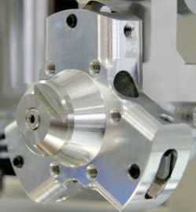

Diamantatrice cambio utensile
Offset |
L’esecuzione del comando T96 M6 modifica la posizione iniziale della lavorazione aggiungendo i valori di Offset X e Y. Se il mandrino dispone del cambio utensile automatico, l’esecuzione di tale comando comporta il caricamento dell’utensile alloggiato nella torretta 7. |
|
Offset X |
-131.070 |
distanza lungo X tra il mandrino e l'utensile |
Offset Y |
11.200 |
distanza lungo Y tra il mandrino e l'utensile |
Preset utensili |
La quota Z di abbassamento sul materiale viene modificata dal valore di preset assegnato all’utensile in uso diminuito del valore di spessore materiale |
|
Utensile in uso |
98 |
Il pulsante |
T96 |
103.710 |
valore di preset per l'utensile T96 |
T97 |
103.313 |
valore di preset per l'utensile T97 |
T98 |
103.229 |
valore di preset per l'utensile T98 |
Posizione di cambio utensile |
||
asse X |
384.423 |
posizione dell'asse X per eseguire un cambio utensile |
asse Y |
-1.000 |
posizione dell'asse Y per eseguire un cambio utensile |
asse Z |
141.500 |
posizione dell'asse Z per eseguire un cambio utensile |
asse A |
0.000 |
posizione dell'asse A per eseguire un cambio utensile |
asse B |
0.000 |
posizione dell'asse B per eseguire un cambio utensile |
asse C |
-89.560 |
posizione dell'asse C per eseguire un cambio utensile |
Posizioni diamantatrice |
 |
|
posizione verticale |
47.257 |
posizione verticale in gradi della diamantatrice |
utensile successivo |
141.000 |
distanza in gradi tra l'utensile corrente e il successivo |
utensile precedente |
117.000 |
distanza in gradi tra l'utensile corrente e il precedente |
 acquisisce la posizione corrente dell’asse Z come nuova quota Z di preset secondo l’utensile in uso;
acquisisce la posizione corrente dell’asse Z come nuova quota Z di preset secondo l’utensile in uso;